BLOG
Table of Contents
1 500 lines or less, AOSA
This book is something that I was looking for some time.The idea is simple: "provide unique insights into how [programmers] think".
The URL to get the book: The Architecture of Open Source Applications
1.1 Blockcode: A visual programming toolkit, Dethe Elza
1.1.1 Highlights
- Procedural code
The code style is procedural, not object-oriented or functional. We could do the same things in any of these paradigms, but that would require more setup code and wrappers to impose on what exists already for the DOM.
- Single file for random functions
Having a single file to gather random functions in is useful, especially when an architecture is under development. My theory of keeping a clean house is to have designated places for clutter, and that applies to building a program architecture too. As this file grows it is important to watch for emerging patterns: several related functions can be spun off into a separate module (or joined together into a more general function). You don't want the catch-all to grow indefinitely, but only to be a temporary holding place until you figure out the right way to organize the code.
- Why No use MVC
…it isn't the right tool for every problem. All the state (the "model" in MVC) is captured by the block elements in a block language anyway, so replicating it into Javascript has little benefit unless there is some other need for the model (if we were editing shared, distributed code, for instance). … An early version of Waterbear went to great lengths to keep the model in JavaScript and sync it with the DOM, until I noticed that more than half the code and 90% of the bugs were due to keeping the model in sync with the DOM.
2 Problem Solving: Bottom-up approach
2.1 Bottom-up approach
- In a bottom-up approach the problem analysis starts at the lowest level possible
- Individual parts of the system are implemented
- This parts are then linked to form larger components
- This process continues till all system components are implemented.
2.1.1 Bottom-up approach common patterns
When using the bottom-up approach, there are some patterns that we can identify:
- Most of the programs follows the event-action paradigm[0]:
- Users supplies an event and
- A sequence of actions is executed in response to that event
- Event-handlers will execute functions in response to an event
- Elements of the user interface may respond to an event in different ways, depending on the context
- if-else statements are used to determine the context and which functions are executed
- Event-handlers must use information shared between user interface objects
- To share information the following options are used:
- Explicit global variables
- A value contained in an user interface object
- Other attribute of an object
2.1.2 Calculator example (Bottom-up)
class Calculator extends React.Component { constructor(props) { super(props); this.state = { currentVal: "0", prevVal: "0", formula: "", currentSign: "pos", lastClicked: "" }; // .... } initialize() { this.setState({ currentVal: "0", prevVal: "0", formula: "", currentSign: "pos", lastClicked: "", evaluated: false }); } handleDecimal() { if (this.state.evaluated === true) { // ... } else if ( !this.state.currentVal.includes(".") && !this.state.currentVal.includes("Limit") ) { // ... if (this.state.currentVal.length > 21) { // ... } else if ( endsWithOperator.test(this.state.formula) || (this.state.currentVal === "0" && this.state.formula === "") ) { // ... } else { // ... } } } handleEvaluate() { if (!this.state.currentVal.includes("Limit")) { // ... expression = expression.replace(/x/g, "*").replace(/‑/g, "-"); while (endsWithOperator.test(expression)) { expression = expression.slice(0, -1); } // ... } } handleOperators(e) { if (!this.state.currentVal.includes("Limit")) { // ... if (evaluated) { // ... } else if (!endsWithOperator.test(formula)) { // ... } else if (!endsWithNegativeSign.test(formula)) { // ... } else if (value !== "‑") { // ... } } } handleNumbers(e) { if (!this.state.currentVal.includes("Limit")) { // ... if (currentVal.length > 21) { // ... } else if (evaluated) { // ... } else { // ... } } } }
2.2 References
[0] https://en.wikipedia.org/wiki/Event-driven_programming
In computer programming, event-driven programming is a programming paradigm in which the flow of the program is determined by events such as user actions (mouse clicks, key presses), sensor outputs, or messages from other programs or threads. Event-driven programming is the dominant paradigm used in graphical user interfaces and other applications (e.g., JavaScript web applications) that are centered on performing certain actions in response to user input. This is also true of programming for device drivers (e.g., P in USB device driver stacks).
[1] https://en.wikipedia.org/wiki/Event-driven_programming#Criticism
The design of those programs which rely on event-action model has been criticised, and it has been suggested that the event-action model leads programmers to create error-prone, difficult to extend and excessively complex application code. Table-driven state machines have been advocated as a viable alternative. On the other hand, table-driven state machines themselves suffer from significant weaknesses including state explosion phenomena. A solution for this is to use Petri nets.
[2] Constructing the User Interface with Statecharts, Ian Horrocks, 1999. ISBN-10: 0201342782
3 Tracking Fatigue: Tapping Rate Test
As far as I could find when the topic of burnout/fatigue is discussed the recommendation is the use of pomodoros and take multiple breaks (and days off).
Pomodoros and breaks are really good, but doesn't take to account that:
- Not all tasks require the same amount of effort:
For example, there are tasks that require multiple decisions and others that are mostly mechanical.
- Coding is not a pure mental task:
Sitting for extend period of time can produce health and other problems (back pain, spinal compression, etc.)
Therefore, it is necessary to use a method that can give more information than the lack of focus. A method that can be used is the "Tapping Rate Test".
3.1 Description
The tapping rate is a psychological test given to assess the integrity of the neuromuscular system and examine motor control.
The finger tapping test has the advantage of being a relatively pure neurologically driven motor task because the inertial and intersegmental interactions are so small that biomechanical influences on movement are reduced.
Finger tapping involves three important features: time, spatial amplitude, and frequency. Studies have reported that the average number of taps per 10-second interval can be used to distinguish between patients with mild traumatic brain injury and healthy controls, is slower in people one month after sustaining a mild traumatic brain injury, and in experienced boxers and soccer players who frequently "headed" the ball the speed of finger tapping has also been found to be related to severity of initial traumatic brain injury, and can be used to help assess recovery from mild and moderate traumatic brain injuries
Springer, Finger-Tapping Test:
During administration, the subject's palm should be immobile and flat on the board, with fingers extended, and the index finger placed on the counting device.
One hand at a time, subjects tap their index finger on the lever as quickly as possible within a 10-s time interval, in order to increase the number on the counting device with each tap. The original procedure calls for five consecutive trials within a 5-point range for each hand, but variations include a total of six trials, in two sets of three.
3.2 How I am doing it
- Test in the morning (wake up->no coffee->test)
- I am only doing it one time , 10 seconds
- I am trying to identify task effort (heavy vs light)
That's all, I hope it can be useful to someone.
4 The Problem With Example Driven Teaching And Gamification
In 1971 (half a century ago), Niklaus Wirth wrote1:
Programming is usually taught by examples … Unfortunately, they are too often selected with the prime intent to demonstrate what a computer can do. Instead, a main criterion for selection should be their suitability to exhibit certain widely applicable techniques.
Furthermore, examples of programs are commonly presented as finished "products" followed by explanations of their purpose and their linguistic details. But active programming consists of the design of new programs, rather than contemplation of old programs. As a consequence of these teaching methods, the student obtains the impression that programming consists mainly of mastering a language (with all the peculiarities and intricacies so abundant in modern PL's) and relying on one's intuition to somehow transform ideas into finished programs.
4.1 Why is the use of examples, puzzles and algorithms so common?
4.1.1 The "gamification" of learning
Gamification in the sense of "use rewards for players who accomplish desired tasks … types of rewards include points, achievement badges or levels".
Algorithms, puzzles and exercises make easy to implement most of those techniques. In the talk Video Games and the Future of Education Jonathan Blow has an interesting explanation of why those techniques have very little in common with games:
[ Gamification ] this stuff didn't come from games … military(awards and decorations), airlines (frequent flyer miles) and all this came before this "gamification" trend.
Gamification is weird, schools have already been doing this for a long time and if your plan about how to improve education is: we're gonna bring gamification to schools … they've already been doing this forever. Maybe instead of calling this stuff gamification we should call it "schoolification".
Other thing I have to say about gamification is it doesn't mean anything. I've spent most this talk talking about the way that games can convey information, the way that they can communicate and when you say you're doing gamification that's not the part of games that you're using. You're using just this part that's a carrot on a stick tied to the donkey to keep the donkey going forward, and that doesn't mean anything … except it means that they're being manipulated and they know they're being manipulated.
The problem with this approach is that we end with the same problems that school has with math: anxiety.
Is common to find posts in forums like this "Maybe I'm not cut out for this", "Super overwhelmed". Most of the time we can find in the answers of this posts a reference to impostor syndrome2 or the explanation "is normal because programming is hard", but I think that is wrong.
I think the problem is: the use an example-driven teaching plus gamification focus the efforts in learn the syntax of the language, but programming is not about syntax nor computer science. Paraphrasing Harold Abelson:
Were (are) really formalizing intuitions about process – how to do things. Talking precisely about how to knowledge. As opposed to geometry that talks about what is true.
The beginner programmer has these achievements related to the syntax, then when they try to solve a problem they struggle because they need the widely applicable techniques to solve a problem, they need structure to explore the problem domain, they also need to know how to deal with the quirks of the language, they need to know "how to start". The problem is that all these things they need, are not related to the achievements they have.
The example-driven teaching plus gamification also lead to the confusion between get the right answer and learn how to solve a problem. Is common the recommendation of "just keep doing exercises, and you will be fine" or "you have to learn algorithms and you will be fine". And that is not really true.
But, why people make these recommendations? I think that Chris Allen3 is right:
Most people believe that the way they teach … is the way they learned it… it is usually not true.
Most people have created a narrative around how they learned things, that is mostly not true.
Definitely among the self learners one of the anti patterns (if you will) … they believe that they figured it out and get it all by themselves … and yeah, that's nonsense… I've seen all the questions in IRC and mailing lists.
Getting help is good, just to be clear. But don't tell yourself that you didn't get help … you did, you got a lot, some of it was synchronous some of it was asynchronous. Like they are reading something in a book … the explanation didn't make sense … then they proceed to google and go through a bunch of other explanations, then they understand it. But what they going to tell to the next person that wants to learn: "oh, I read this book".
That's not true, that's not the whole truth. And it is important that we understand that's not the whole truth, because otherwise the recommendations we're giving people are subjecting them the same pain that we've already gone through and that's not necessary.
Fetish and Myth
- Common anti-pattern: experienced (Haskellers|Programmers|etc.) recommending resources they didn't actually use to learn the topic.
- CLRS is recommend by a lot more people than have done at least 10% of the book.
- Going to call shenanigans on Maclane's Algebra too, unless you read it while in grad school for mathematics.You need a strong foundation before it will do you any good.
- They're recommending resources to which they assign high prestige (difficulty, obscurity, etc.)
- Then a beginner attempts to learn using an expert's Flavor of the Month, gets stuck, and burns out
- You are not doing learners a favor when you do this
- That resource is probably not how you learned the topic
Another example of this: "Talk: UnLearning Elixir"
This is what happens when I first drove into functional programming: people handed me a book on category theory and said "oh, just read this book on category theory and it will be fine".
Now, anybody here actually know … anybody here is actually a category theory or PhD researcher in this stuff?.
Because, you shouldn't have to have a PhD on applied or abstract mathematics to write a piece of software … it might be applicable, but shouldn't be a requirement or prerequisite.
Most of the time when people recommends "learn algorithms" they really are using algorithm in the sense of: "word used by programmers when they don't want to explain what they did"4. Because when someone get this answer none of the (common) Computer Science algorithms can be used to solve the problem the person was facing nor was an specific algorithm recommended. Also if you ask, what was the last time they had implemented an algorithm from scratch in production (or in a project) they answer is never or they definition of algorithm is so broad ("everything is an algorithm") that the word lost any meaning.
4.2 There is a different approach
Part of the title of this post is from the talk "35C3 - How to teach programming to your loved ones":
Enabling students over example-driven teaching
Teaching beginners how to program is often hard. We love building programs, and seeing our loved ones struggle with this is painful. Showing them how to copy-paste a few example programs and change a few parameters is easy, but bridging from there to building substantial programs is a different game entirely. This talk is about how to teach programming successfully, through comprehensible design recipes, which anyone can follow, using languages and tools designed for beginners. This approach is probably different from how you learned how to program, or how you're used to teaching. It is more effective, however, as it teaches more material successfully to a broader spectrum of people. It is also more enjoyable.
The talk is based on many years of research by the Program by Design, DeinProgramm, and Bootstrap educational projects, as well as over 30 years of personal teaching experience in school, university and industrial contexts. A word of warning: The resulting approach is radically different from most teaching approaches used in universities and schools. In particular, it avoids teaching purely through examples and expecting students to develop the skills to arrive at the solutions on their own.
Instead, it eaches explicit methodology that enables students to solve problems of surprising complexity on their own*, whether they are 11 or 55, whether in a classroom, a training facility, or your home. Extensive documentation, material, and software to support this methodology is available for free. Mike Sperber
4.2.1 I always recommend HTDP
The course "How to Design Programs" is really good:
- The video course: Systematic Programming Design
- The book: How to Design Programs, Second Edition
The idea is simple, is possible to write programs in a systematic way:
- Data definition

- Design a program:

- Design a function:

The above is only an example, the course teach many more things.
5 Unicode Experiment (to avoid mistakes)
For a while I have being using symbols 5 to show specific JavaScript functions and operators, as a way to avoid making some mistakes that are (at least for me) really annoying. Everything start because I was mixing asignment (​) with equality (=), probably a common mistake. By chance I saw a video about APL6, 7, and after some research I thought that maybe my problem was a notation problem8.
5.1 What I am doing
5.1.1 Assignment
5.1.2 Comparison
The customary recommendation is use strict equality (​=),
but 3 symbols take too much space, so now I use the `≡` symbol (U+2261 Identical to)
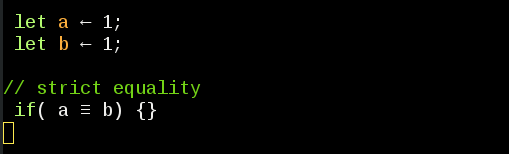
5.1.3 switch and case
The switch statement looks like a list (to me), and I think is natural to use an arrow when enumerating, so I use the `🝘` (U+1F758 Alchemical symbol for pot ashes, the idea of this one come from the movie 'bandersnatch') and `➜` (U+279C Heavy round-typped rightwards arrow)
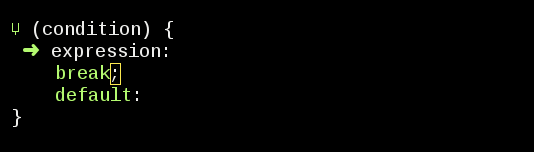
5.1.4 array push and pop
Push and pop, are somewhat difficult to parse, so I use `↧` (U+21A7 Downward Arrow from Bar) for push, and `↥` (U+21A5 Upwards Arrow from Bar) for pop.
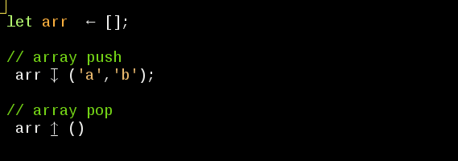
5.1.5 array map
I alway use map, and `↦` (U+21A6 Rightwards Arrow from Bar ) is easier to spot than a word.
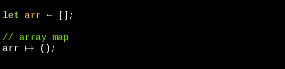
5.1.6 function
I think that `λ` (U+03BB Greek Small Letter Lamda ) is more easier to spot than the word function (and take less space)
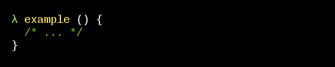
5.1.7 return
My keyboard has the symbol `↲` (U+21B2 Downwards Arrow with Tip Leftwards) in the return key, so it seems a good idea:
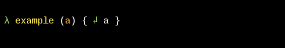
5.1.8 array filter and element
For array filter I use `σ' (U+03C3 Greek Small Letter Sigma), and for element `∈` (U+2208 Element Of)
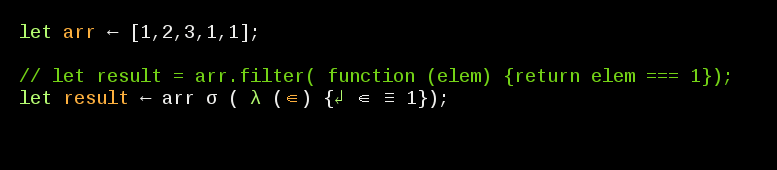
5.1.9 A function example
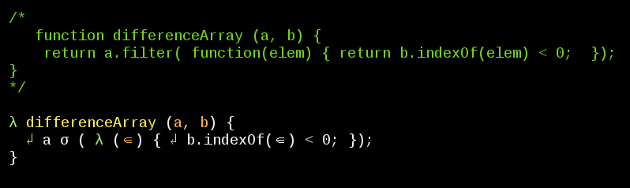
5.1.10 An arrow function example
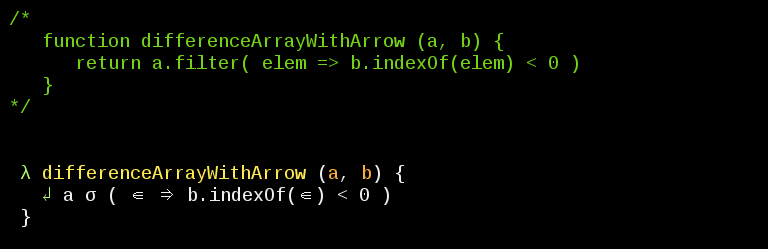
5.2 Conclusions
At least for me is easier to read symbols than words, I tried adding comments (function sigantures) but is not the same (with symbols I can scan the code really fast). The best part is, thanks to Emacs, this aesthetic change not have any effect in the source code (and I can turn on-off the changes fast).
6 Use Recursion to Create a Range of Numbers, FAQ
6.1 Code
function rangeOfNumbers(startNum, endNum) { if(startNum === endNum) { return [endNum]; } else { let arr = rangeOfNumbers(startNum + 1, endNum); arr.push(startNum); return arr; } } let result = rangeOfNumbers(1,4); console.log(result);
[ 4, 3, 2, 1 ]
6.2 Step By Step

6.3 What happens when the base case is evaluated as false?
The function calls itself: Steps: 4,6,8
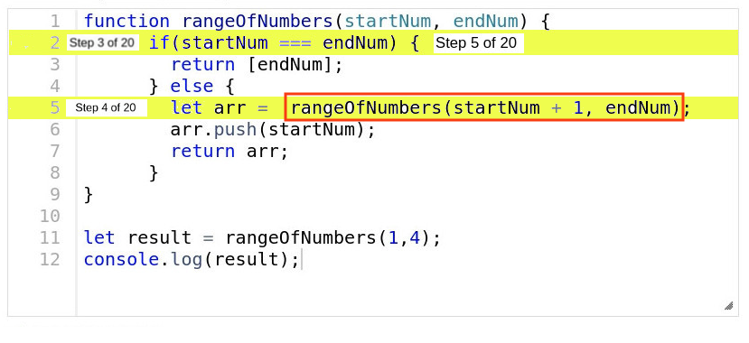
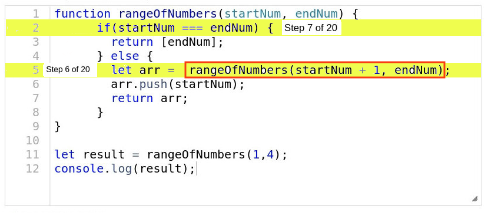

6.4 What happens when the base case is evaluated as true?
Returns an array: Step: 10
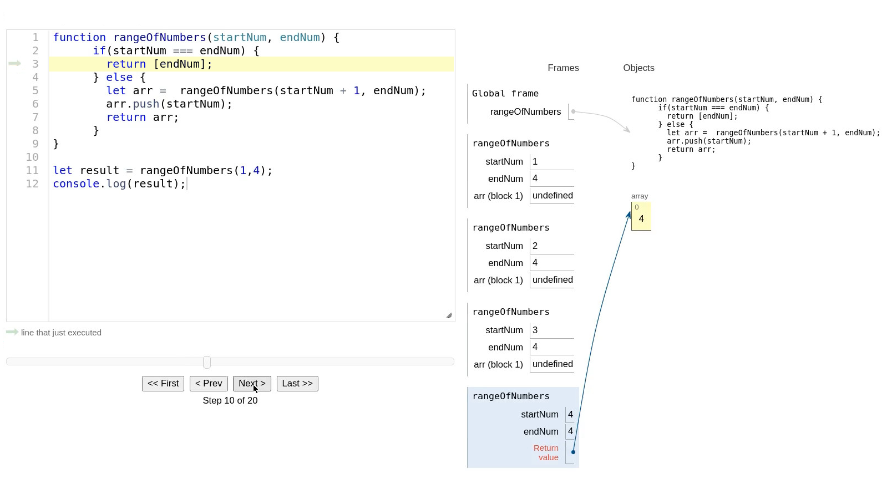
6.5 The Array, where does it come from?
From the base case: Step 10
6.6 Why can I push startNum to arr?
Because after the base case is evaluated as true, arr is an array: Step: 11
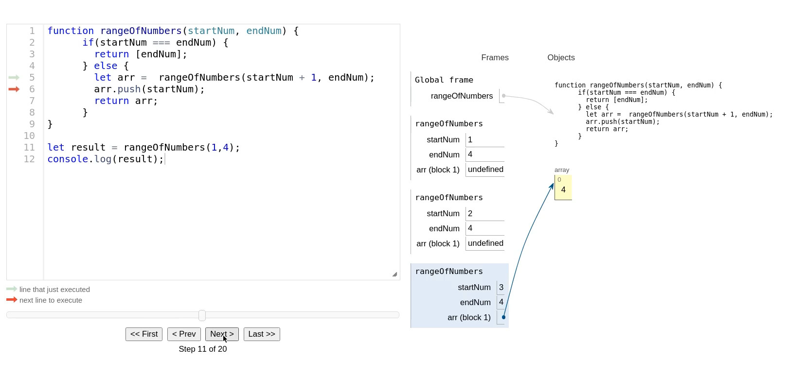
6.7 Why I'm Getting [4,3,2,1] ?
Because JavaScript uses a "stack" (LIFO, last in first out): Steps 10, 13, 16, 19
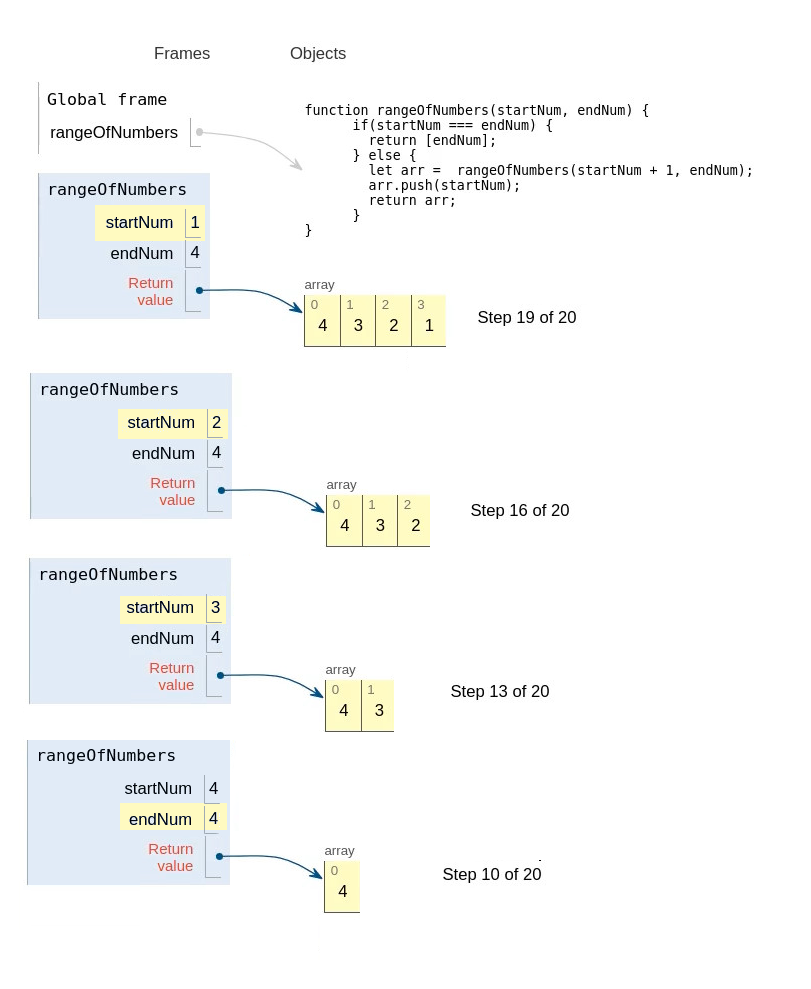
6.8 How can I get [1,2,3,4]?
Replace push with unshift
function rangeOfNumbers(startNum, endNum) { if(startNum === endNum) { return [endNum]; } else { let arr = rangeOfNumbers(startNum + 1, endNum); arr.unshift(startNum); // <- here return arr; } } let result = rangeOfNumbers(1,4); console.log(result);
[ 1, 2, 3, 4 ]
Footnotes:
https://en.wikipedia.org/wiki/Impostor_syndrome
is a psychological pattern in which an individual doubts their accomplishments or talents and has a persistent internalized fear of being exposed as a "fraud"
I found this quote in the internet, is a "meme", I don't know the origin of it.
https://www.emacswiki.org/emacs/PrettySymbol
displaying sequences of characters as fancy characters or symbols
Notation as a tool of thought
http://www.jsoftware.com/papers/tot.htm
By relieving the brain of all unnecessary work, a good notation sets it free to concentrate on more advanced problems, and in effect increases the mental power of the race. A.N. Whitehead